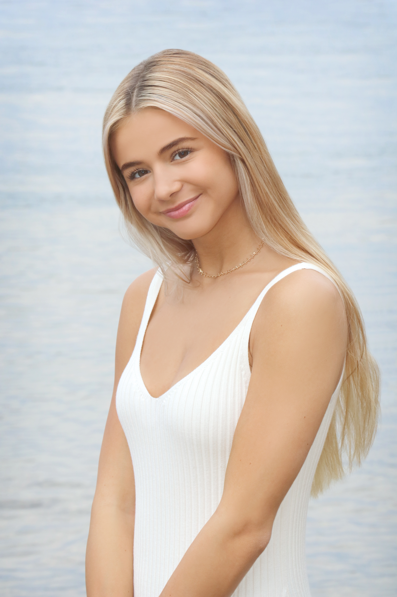

Olivia Lueck
I am from Minnesota and I am a senior graduating this winter!
I enjoy exercising and spending time with my family and friends.
My favorite piece of technology is my Oura Ring because it helps me track my sleep, recovery, and daily activity.
Jeremie Peart
Add Jeremie’s info here...
Alayna Beringer
I am a second year graduate student in the MLIS program and a new mom.
I enjoy spending time with my husband and daughter, listening to music, and reading when I have time!
My favorite piece of technology is my smartphone because of how convenient and efficient it is.